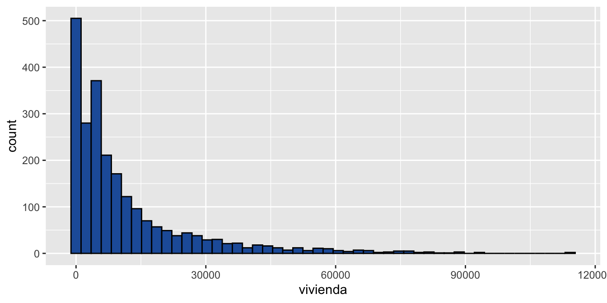

# instalación
install.packages("tidyverse")6 Tidyverse en R
6.1 Introducción a Tidyverse
Tidyverse es una colección de paquetes diseñados para Ciencia de Datos.
Todos los paquetes comparten una filosofía de diseño, una gramática y estructuras de datos.
Esta filosofía promueve
- En Pipes, navegarás dentro del pipe,
%>%, para anidar instrucciones - Si bien copiar-y-pegar (copy-and-paste) es una herramienta poderosa, deberías evitar utilizarla más de dos veces. Repetir el código es peligroso porque puede llevar a errores e inconsistencias.
- A medida que comiences a escribir funciones más potentes, necesitarás una base sólida acerca de las estructuras de datos.
- Las funciones nos permiten evitar la repetición de código; sin embargo, muchas veces necesitas repertir las mismas acciones con diferentes inputs. Puedes hacer esto con herramientas de iteración.
6.2 Estructura de un dataframe

Lectura de Base de SII
suppressPackageStartupMessages(library(dplyr))
suppressPackageStartupMessages(library(sf))
tbl_sii <- readRDS("data/sii/mz_constru_SII.rds") %>%
st_drop_geometry() # descartar geometrias solo usar la tabla de datos
head(tbl_sii)# A tibble: 6 × 10
n_com manzana reg cod_com num_manz oficinas comercio vivienda total AREA
<chr> <chr> <dbl> <dbl> <dbl> <dbl> <dbl> <dbl> <dbl> <dbl>
1 IQUIQUE 1201-0 1 1201 0 0 0 0 0 585.
2 IQUIQUE 1201-0 1 1201 0 0 0 0 0 17291.
3 ALTO H… 1211-0 1 1211 0 0 0 0 0 1859.
4 ALTO H… 1211-0 1 1211 0 0 0 0 0 442.
5 ALTO H… 1211-0 1 1211 0 0 0 0 0 205.
6 ALTO H… 1211-0 1 1211 0 0 0 0 0 1200.6.3 Funciones básicas dplyr
6.3.1 Select
select Seleccionar variables relevantes
# seleccionar nomnres de columnas que deseo conservar
tbl_sii %>%
select(n_com, oficinas, comercio, vivienda)# A tibble: 210,662 × 4
n_com oficinas comercio vivienda
<chr> <dbl> <dbl> <dbl>
1 IQUIQUE 0 0 0
2 IQUIQUE 0 0 0
3 ALTO HOSPICIO 0 0 0
4 ALTO HOSPICIO 0 0 0
5 ALTO HOSPICIO 0 0 0
6 ALTO HOSPICIO 0 0 0
7 ALTO HOSPICIO 0 0 0
8 ALTO HOSPICIO 0 0 0
9 ALTO HOSPICIO 0 0 0
10 ALTO HOSPICIO 0 0 0
# ℹ 210,652 more rows# seleccionar nomnres de columnas que deseo eliminar anteponiendo un "-"
tbl_sii %>%
select(-cod_com)# A tibble: 210,662 × 9
n_com manzana reg num_manz oficinas comercio vivienda total AREA
<chr> <chr> <dbl> <dbl> <dbl> <dbl> <dbl> <dbl> <dbl>
1 IQUIQUE 1201-0 1 0 0 0 0 0 585.
2 IQUIQUE 1201-0 1 0 0 0 0 0 17291.
3 ALTO HOSPICIO 1211-0 1 0 0 0 0 0 1859.
4 ALTO HOSPICIO 1211-0 1 0 0 0 0 0 442.
5 ALTO HOSPICIO 1211-0 1 0 0 0 0 0 205.
6 ALTO HOSPICIO 1211-0 1 0 0 0 0 0 1200.
7 ALTO HOSPICIO 1211-0 1 0 0 0 0 0 4548.
8 ALTO HOSPICIO 1211-0 1 0 0 0 0 0 130.
9 ALTO HOSPICIO 1211-0 1 0 0 0 0 0 300.
10 ALTO HOSPICIO 1211-0 1 0 0 0 0 0 6488.
# ℹ 210,652 more rows6.3.2 Filter
mi_comuna <- "LAS CONDES"
sii_com <- tbl_sii %>%
filter(n_com == mi_comuna)
head(sii_com, 5)# A tibble: 5 × 10
n_com manzana reg cod_com num_manz oficinas comercio vivienda total AREA
<chr> <chr> <dbl> <dbl> <dbl> <dbl> <dbl> <dbl> <dbl> <dbl>
1 LAS CON… 15108-… 13 15108 2358 0 0 1316 1390 2358.
2 LAS CON… 15108-… 13 15108 2360 0 0 1590 1622 2280.
3 LAS CON… 15108-… 13 15108 2362 0 0 1436 1502 2659.
4 LAS CON… 15108-… 13 15108 2364 0 0 1926 1926 3348.
5 LAS CON… 15108-… 13 15108 2366 0 0 2584 2656 4390.filter: Operadores Lógicos
| Operador | Comparación | Ejemplo | Resultado |
|---|---|---|---|
| x | y | x Ó y es verdadero | TRUE | FALSE | TRUE |
| x & y | x Y y son verdaderos | TRUE & FALSE | FALSE |
| !x | x no es verdadero (negación) | !TRUE | FALSE |
| isTRUE(x) | x es verdadero (afirmación) | isTRUE(TRUE) | TRUE |
Filtrar las manzanas que tengan valores de oficina y comercio mayores a 0
sii_com %>%
filter(oficinas > 0 & comercio > 0) # A tibble: 493 × 10
n_com manzana reg cod_com num_manz oficinas comercio vivienda total AREA
<chr> <chr> <dbl> <dbl> <dbl> <dbl> <dbl> <dbl> <dbl> <dbl>
1 LAS … 15108-… 13 15108 2400 322 3388 65422 1.22e5 1.06e5
2 LAS … 15108-… 13 15108 2407 30864 2518 0 7.50e4 4.04e3
3 LAS … 15108-… 13 15108 1392 424 9902 0 1.58e4 1.27e4
4 LAS … 15108-… 13 15108 336 45190 1432 0 8.28e4 3.24e3
5 LAS … 15108-… 13 15108 338 424. 244. 9993. 1.17e4 1.11e4
6 LAS … 15108-… 13 15108 338 414. 238. 9765. 1.14e4 1.06e4
7 LAS … 15108-… 13 15108 339 1120 5274 7748 1.49e4 9.38e3
8 LAS … 15108-… 13 15108 340 250 72 55206 7.23e4 1.22e4
9 LAS … 15108-… 13 15108 342 494 1914 47690 6.97e4 1.62e4
10 LAS … 15108-… 13 15108 349 17826 1568 0 3.38e4 1.84e3
# ℹ 483 more rows6.4 Resúmenes Estadísticos con dplyr
Contabilizar cuantos metros cuadrados de oficina por cada comuna.
tbl_resumen <- tbl_sii %>%
group_by(n_com) %>%
summarise(Cantidad_mz = n(),
Total_of = sum(oficinas)) %>%
arrange(desc(Total_of)) # Ordenar
tbl_resumen# A tibble: 170 × 3
n_com Cantidad_mz Total_of
<chr> <int> <dbl>
1 SANTIAGO CENTRO 686 6105996
2 LAS CONDES 2310 4248336
3 PROVIDENCIA 885 3495426
4 HUECHURABA 1160 1006138
5 QUILICURA 2592 751874
6 VITACURA 950 743734
7 SANTIAGO SUR 623 669270
8 ÑUÑOA 1337 637982
9 SANTIAGO OESTE 586 586724
10 PUDAHUEL 2775 561868
# ℹ 160 more rowsActividad
- Contabilizar cuantos metros cuadrados de Comercio hay por cada comuna rdenar de mayor a menor.
- Crear tabla con las 10 comunas que tienen mayor densisdad de Comercio
Densidad de comercio
Se puede entender como la división de la cantidad de metros cuadrados de comercio dividio por el total de metros cuadrados.
6.5 Visualización de Variables
6.5.1 Función Plot
options(scipen = 999) # evitas notación cientiífica
hist(sii_com$vivienda, breaks = 50,
main = "Histograma mt2 de Viviendas", col = "#225ea8")# colores:https://colorbrewer2.org/#type=sequential&scheme=BuGn&n=36.5.2 Package ggplot2
library(ggplot2)
ggplot(sii_com, aes(x = vivienda)) +
geom_histogram(bins = 50, fill = "#225ea8", color ="black")
ggplot2 con estilos y características
ggplot(sii_com, aes(x = vivienda)) +
geom_histogram(bins = 50, color = "#c7e9b4", fill = "#1d91c0")+
theme_bw()+
labs(title="Histograma mt2 de Viviendas", x ="Mt2. Viviendas", y = "Frecuencias")+
theme(plot.title = element_text(face = "bold",colour= "gray60", size=10))